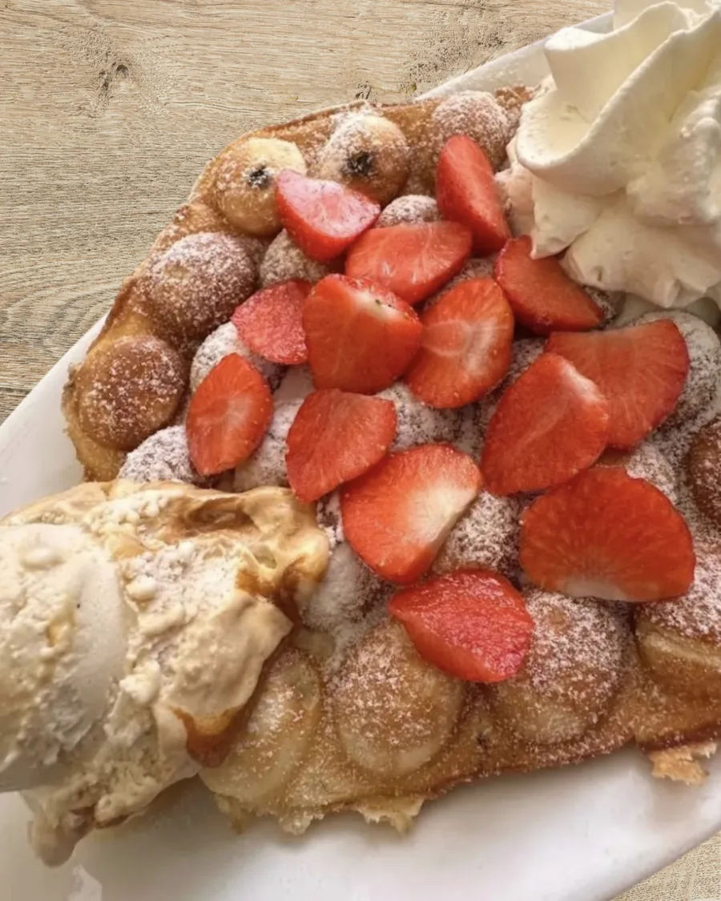
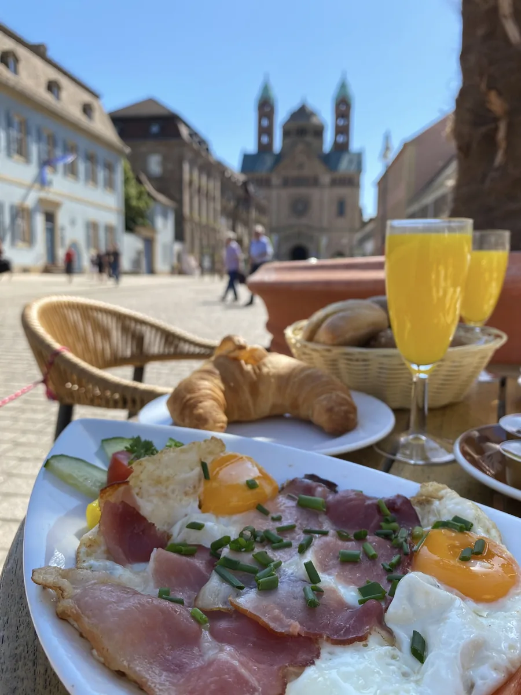
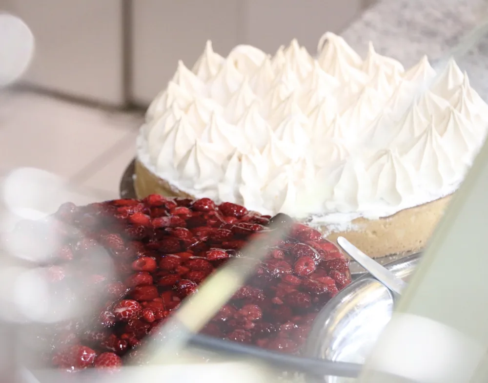
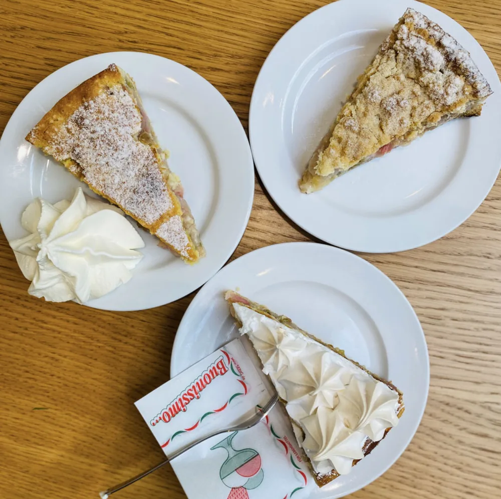
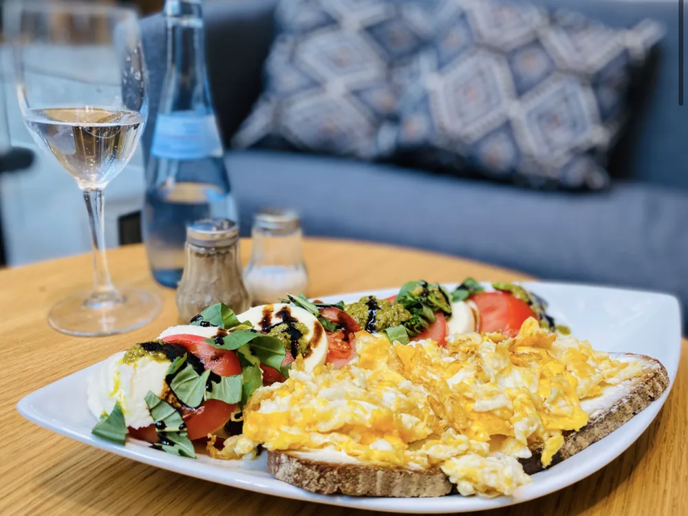
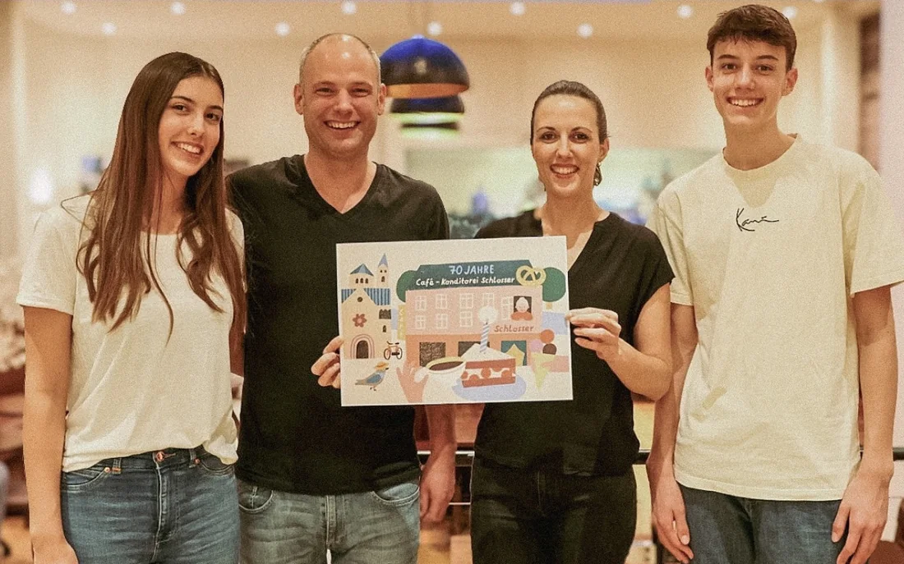

Sahnetorten
Luftige Böden, feine Sahne – unsere Klassiker nach Familienrezept.
Café & Konditorei Schlosser


Hausgemachte Kuchen und Torten, Frühstück, Bubblewaffeln, Eisbecher und Kaffeespezialitäten – seit drei Generationen in Familienhand, nur wenige Schritte vom Dom entfernt.
Entdecke unsere Genusswelt
Sechs Welten voller Genuss – wähle, worauf du gerade Appetit hast.
Klein, groß oder ganz nach Wunsch – jeden Tag frisch.
Hausgemacht, täglich frisch – nach Familienrezepten.
Suppen, Salate & Flammkuchen zur Mittagszeit.
Kaffee- und Teespezialitäten in gemütlicher Runde.
Italienisches Eis in großer Auswahl – auch als Winterkreationen.
Frisch gebacken, als Tüte gerollt oder auf dem Teller.
Guten Morgen, Speyer
Ob kleiner Start in den Tag oder ausgiebige Tafel: Bei uns gibt es das kleine oder große Frühstück – oder du stellst dir dein Frühstück ganz nach Wunsch zusammen. Mit warmen Getränken, Ei, Schinken und Käse, frischem Obst, Saft und ofenfrischen Brötchen mit Butter und Marmelade.
Serviert in unseren Café-Räumen oder auf der Terrasse – auch sonn- und feiertags.
Unsere Konditorei
Seit 1954 backen wir nach eigenen Familienrezepten: saftige Sahnetorten, fruchtige Obstkuchen und cremige Spezialitäten – täglich frisch in unserer eigenen Konditorei hergestellt, mit dem Wechsel der Jahreszeiten immer wieder neu.
Luftige Böden, feine Sahne – unsere Klassiker nach Familienrezept.
Saisonale Früchte auf mürbem Boden – frisch und leicht.

Zartschmelzende Cremeschichten für echte Genießer.

Wir haben die Rhabarber-Saison eröffnet – bei uns in drei Varianten: als Baiser, Streusel oder Sand.
Unsere Auswahl wechselt täglich – schau vorbei und lass dich von der Vitrine überraschen.
Mittagstisch · 12 – 14 Uhr
Zur Mittagszeit servieren wir feine Suppen, knackige Salate und herzhafte Brotzeiten – alles frisch zubereitet und ideal für eine gemütliche Pause in der Speyerer Innenstadt.

Verspielt & erfrischend
Unsere große Eisbecher-Auswahl entsteht aus echtem italienischem Eis der Eismanufaktur Englert aus Speyer. Dazu servieren wir Schlosser's Bubblewaffel – frisch aus feinem Waffelteig gebacken, als Tüte gerollt oder flach auf dem Teller.
Große Auswahl an Bechern mit italienischem Eis – für die ganze Familie.
Frisch gebacken – als Tüte gerollt oder flach, ganz nach Wunsch.
Spekulatius, Wiener Mandel & Belgische Schokolade – limitiert & saisonal.
Zeit für eine Pause
Zu unseren hausgemachten Kuchen und Torten servieren wir feine Kaffee- und Teespezialitäten – am liebsten bei einem ruhigen Moment in unseren Café-Räumen oder auf der Terrasse mit Blick Richtung Dom.
Unsere Geschichte
Am 1. Januar 1955 pachteten Konditormeister Reinhold Schlosser und seine Frau Maria das „Café Ebert" in der Speyerer Maximilianstraße – der Beginn einer Café- und Konditoreitradition, die bis heute andauert. Seit 1954 in Familienhand, führen wir das Café heute bereits in der dritten Generation weiter: mit hausgemachten Kuchen, ehrlichem Handwerk und der Gastfreundschaft, für die Café Schlosser seit jeher bekannt ist.
Mitten in der Fußgängerzone der Speyerer Altstadt, nur rund 200 Meter vom Dom entfernt, ist unser Café seit Jahrzehnten ein fester Treffpunkt für Speyererinnen und Speyerer sowie Gäste der Stadt – auf unserer Terrasse mit Blick Richtung Domplatz lässt es sich besonders gut verweilen.

Familie Theile – dritte Generation
Gut zu wissen
Telefonisch unter 06232 74101 – einfach Name, Uhrzeit und Personenzahl angeben.
Einfach vorbeikommen, Wunschbetrag nennen und den Gutschein mitnehmen.
Kostenloses WLAN im Café – das Passwort gibt's gerne an der Theke.
Vierbeiner sind bei uns herzlich willkommen.
Kinderstühle sind für die Kleinsten vorhanden.
Wir freuen uns auf dich
Komm vorbei, entdecke unsere Vitrine und lass dich verwöhnen – oder sichere dir vorab telefonisch deinen Tisch.